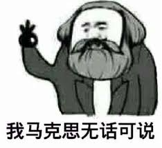

两个不是——程序员读俞军《产品方法论》

读了两遍俞军老师的《产品方法论》，我总结了两个不是，建议俞军老师写在腰封上：
用户不是人，产品不是科学。
用户不是人
从产品经理的视角来看，用户不是自然人，而是需求的集合。
—— 2.2 如何理解用户
这大概是这本书最经典的名言，相信各位读者掩卷之后，脑海中都能回响起这句话。
在书里，俞军举了微信的例子：如果去掉扫一扫、朋友圈和微信钱包，相信微信仍然是 10 亿日活，但恐怕就并非千亿市值。
对我个人而言，这里有两个点还是值得思考的：
- 对于日活很高的产品而言，在增长之外依旧有满足用户需求的能力；
- 始终要理解用户不是冰冷的 DAU 数字，而是一个又一个的诉求；
在用户这一章，俞军进行了很多用户本质的思考，也列举了很多公式，这里就不一一列举。能板正我一个码农对用户的理解，我觉得已经是善莫大焉。举一个开发过程中遇到的实际例子：
近期有一个诉求是提升用户的分享次数。面对这个目标，一般的产品会选择增加分享弹窗的出现频率、或者给分享按钮加上花里胡哨的动画，这种举动往往收效甚微，而且容易引起用户的反感；高阶的产品则会思考：分享满足了用户的什么需求？实际数据显示，超过三成用户主动进行分享，是为了满足自己展示作品给他人，求得关注、涨粉的诉求。因此主动提示用户分享自己的作品，反而起到了不错的效果。
因此俞军反复在书里强调：同理心是高阶产品经理的准入门槛。同情与同理不同：前者是能理解用户的感受，后者是能感受用户的感受。能够切身处地站在用户的视角思考问题，体会到用户的痛苦一袋米要扛几楼，才能够真正做出契合用户诉求的产品。
产品不是科学
产品工作更接近于社会科学……所有研究人类社会的学科都不是严格意义上的科学，因为它不能真正重复验证，也就无法从真正意义上证伪，而可证伪是科学的最根本特征。
—— 1.3 产品经理做什么
俞军在回答产品经理是什么这个问题上，花了许多篇幅说产品并非严格意义上的科学这一话题。我个人理解，这是由于应届生涌入产品这一行列之后，俞军老师不由自主地进行了对做题家的批判（大 佐 狂 喜）。
书里讲到：自然科学与社会科学最大的不同，便是自然科学有研究标的物的属性稳定一致，结论可以跨时间、跨空间重复验证——即有”正确答案“；而社会科学往往研究标的物完全不重复，导致结论也无法普适——即没有正确答案，只有一定场景下的最优解，而且下次也不一定好使。
有趣的是，这样的两相对立，恰如程序员与产品的思维对立：程序员面对的是可预测系统，需要自然科学的锤炼；而产品面临着混沌与未知，因此需要社会科学的洗礼。因此厉害的产品经理与厉害的程序员，在思维方式上会存在着本质的不同——这大抵就是二者相爱相杀的由来了。
因此俞军在书里讲，产品经理要多读心理学与经济学，心理学是产品的微观，经济学是产品的宏观。我个人理解，经济学、心理学不止产品经理要学习，程序员更需要学习。由于程序员长期被做题思维侵染，在其他领域的学习就显的尤为重要：因为我们面临的大多数问题都是不确定的，用自然科学的思维去对一切问题进行求解，往往会处处碰壁。
如何继续学习
在聊这个话题之前，想先说说这本书的最有趣的地方：尽管本书评分不低，但首页却能看到各种差评如潮，高分和低分吵个不停。
看了几十条差评，低分段的老铁们大致有三大恨：
- 一恨本书为合著：我裤子都脱了，您跟我说这不是俞老师亲自开的光？那金庸跟金庸新能一样吗？
- 二恨本书乱发散：作为一个外行想学产品，不料却发现本书是一个心理学外行在讲经济，看完以后直呼外行；
- 最恨本书太装逼：通篇胡扯一堆形而上学的感念，看的云里雾里。这就是滴滴产品烂的原因吗，悟了悟了。
高分段的老哥们套路就比较多样了，有单纯慕名点赞的，有认真学习做笔记的，也有确有感悟的。
那为什么这本书的评价会产生这样严重的两极分化呢？这样的差异，主要跟读者的阅历不同有关。
知识的学习是一个系统的过程，个人理解主要分为三个阶段：输入、理解、内化。
输入
这个过程是比较简单的，读书、阅读、看视频都可以助人快速起步——例如看过很多评论说看过王刚老师的视频之后厨艺见长，看过罗翔老师的视频之后熟练地掌握了各种犯罪技巧；
理解
零散知识输入到一定程度之后，大脑就会产生负担：人脑天生不喜死记硬背，偏爱寻找规律。但这偏爱又没有那样强烈（毕竟思考耗能太多），因此多数人在日常工作之中没有保持思考的习惯。我愿称之为学习中”惊险的一跃“：只有你亲自杀死脑细胞们，构建出思维模型，才能度过这一阶段。例如在当你学习了王刚老师的各种课后总结，突然发现做饭是一门科学，之后厨艺大增。
内化
第二步构建的模型并非普适的，甚至并非正确的，只有在之后的学习中不断对其进行补充和修正，才会对知识有体系化的理解。达到纵使千头万绪，也能剥茧抽丝的境界。当然，如果能度过第二阶段，这一阶段压力会小很多：因为在模型成功建立之后，学习有了导向性，而且会更加高效。查理·芒格曾提到他进行分析决策时，会用到一套”多元思维模型“，这些思维模型其实就是已经内化的各学科领域的知识。
不幸的是这个过程不能反其道而行之：一个人在没有输入的前提下，甚至没有理解的前提下，直接快进到内化是完全不行的。长辈的谆谆教诲，我们嗤之以鼻；名流的只言片语，我们趋之若鹜——他们讲的都是有用的道理，然而我们听或者不听，都没什么用。这也就是所谓”听过许多道理，却也过不好一生“。
因此我们也可以理解两种人对本书的不同态度：产品新人期望能通过一些实际案例来做输入，但书里都是模型而非输入，让人读了头大；有一定经验的产品老狗反而击节赞叹，因为这本书可以帮助迷惘者理解、理解者内化，因此读之大有裨益。
不过，好评老哥和差评老铁们唯一都赞同的一点是，这本书第五章提供的书单不错，分别列举了一些心理学、经济学和批判性思维相关的书籍。因此我整理了一个豆列，就当作自己已经完成了这”惊险的一跃“吧。
